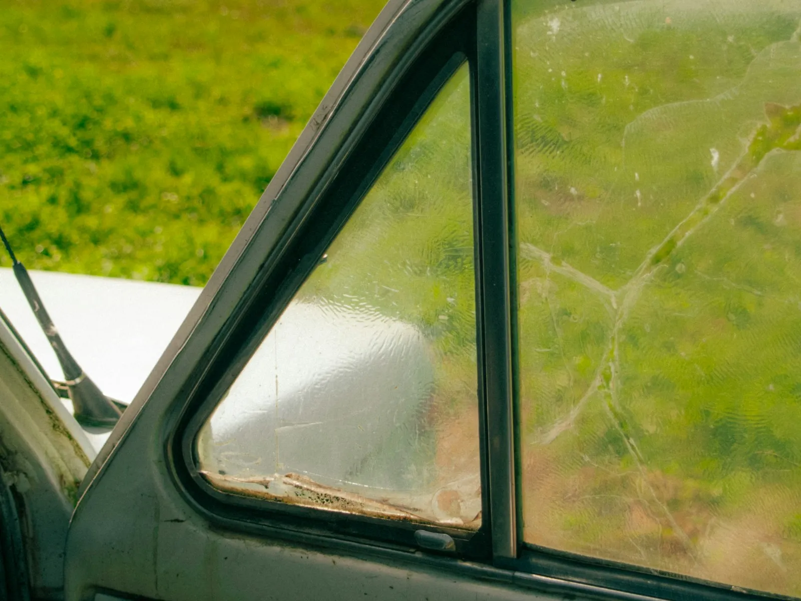

Side and Back Window Replacement in Wichita, KS
Side window and back glass replacement in Wichita for broken door windows, quarter glass and rear windows. We come to you, vacuum out the broken glass, and install a new window that matches your factory tint. Call (316) 669-4751 to get the car closed up.
What Does Side or Back Window Replacement Involve?
For a door window, the technician removes the door panel, vacuums every cube of broken glass out of the door and the carpet, and installs a new window in the regulator track. Then the window is tested up and down and the panel goes back on.
Back glass replacement in Wichita means cutting out the old urethane, cleaning the frame, and bonding in a new rear window. The defrost lines and any antenna connections are reattached and tested before we leave.

When Do You Need a Side or Back Window Replaced?
- A smash-and-grab break-in, downtown or in an apartment lot
- Hail or flying debris that broke the rear window
- A door window that dropped into the door and broke
- Cracked quarter glass, the small fixed window near the door pillar
- A rear defroster that stopped working because the glass is damaged
A break-in is upsetting, and the first thing most callers say is "How soon can you get here?" Tell us where the car is parked and we'll give you the earliest slot.
Why Do Side and Back Windows Shatter Instead of Crack?
Side and rear windows are tempered glass. It's heat-treated so that when it fails, it breaks into small, dull cubes instead of sharp shards. That's safer in a crash, but it means tempered glass can't be repaired the way a windshield chip can.
Windshields are laminated, two layers of glass with plastic in between, which is why they crack and stay in place. Different glass, different fix.
What Affects the Cost of Side or Back Glass in Wichita?
These are the things that move the quote:
- Which window broke: front door, rear door, quarter glass or back glass
- Factory privacy tint or a solar coating
- Defrost lines, antenna wiring or a rear wiper on back glass
- Your comp deductible, if you're filing a claim
Call (316) 669-4751 and tell us which window. We'll quote it on the spot.
OEM vs. Aftermarket Side Glass: Which Do You Need?
OEM glass is made by or for your car's maker and carries the maker's logo. OEM-equivalent glass meets the same federal safety standard and fits the same, often for less.
For most side windows, equivalent glass is a sensible choice. Some leases and newer cars call for factory glass, so check your paperwork. If your windshield took a hit in the same storm, ask about windshield replacement in Wichita on the same visit.
Frequently Asked Questions
Can a cracked side window be repaired?
No. Side and rear windows are tempered glass, which can’t be filled with resin like a windshield chip. Once tempered glass cracks or breaks, the window needs a full replacement, which we do on-site in Wichita.
How long does side window replacement take in Wichita?
Most side window replacements take about an hour, including vacuuming the broken glass out of the door and the carpet. Back glass takes a bit longer and needs a short cure time before you drive.
Should I cover a broken window until you get there?
Yes. Tape heavy plastic over the opening and park in a garage if you can, especially if rain is in the Wichita forecast. Don’t try to pull loose glass out of the door by hand.
Cracked glass in Wichita? Get it handled this week.
Call and tell us the year, make and model. We’ll give you a straight quote and a time slot.